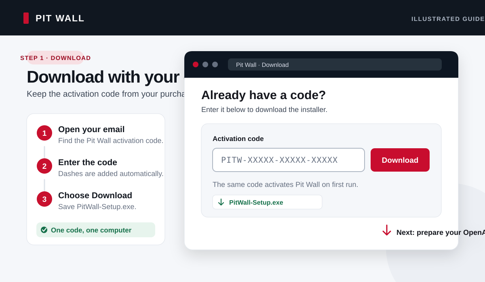
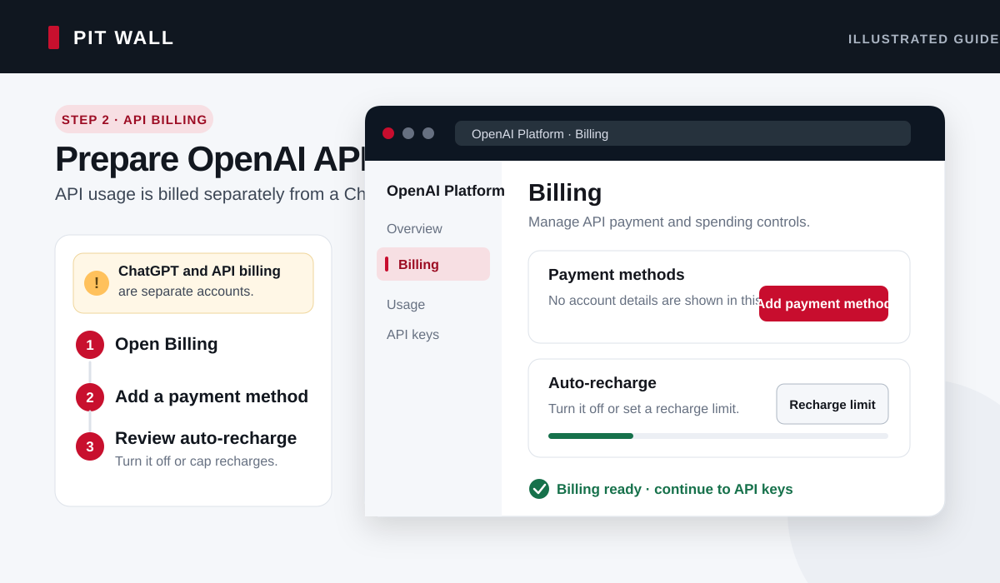
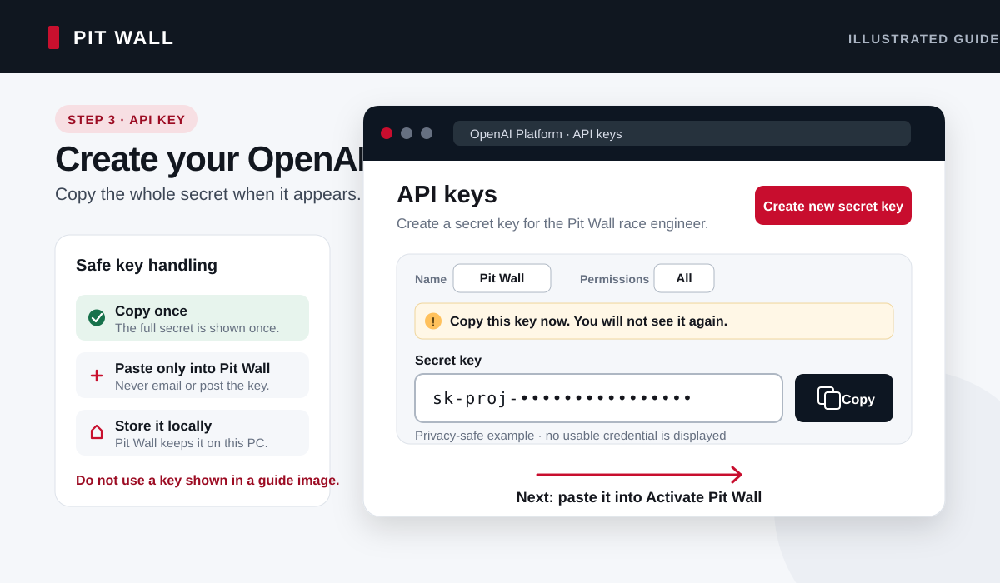
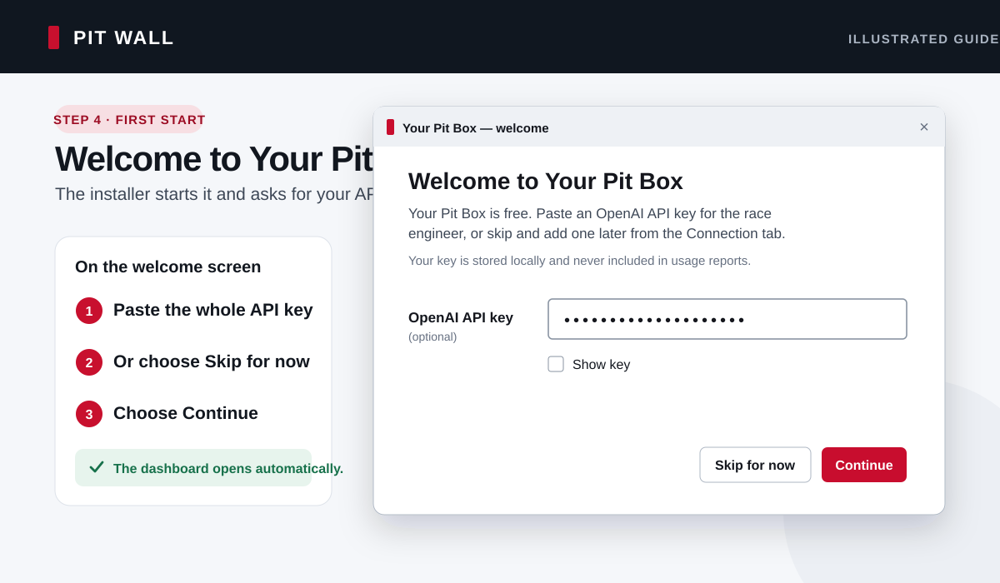
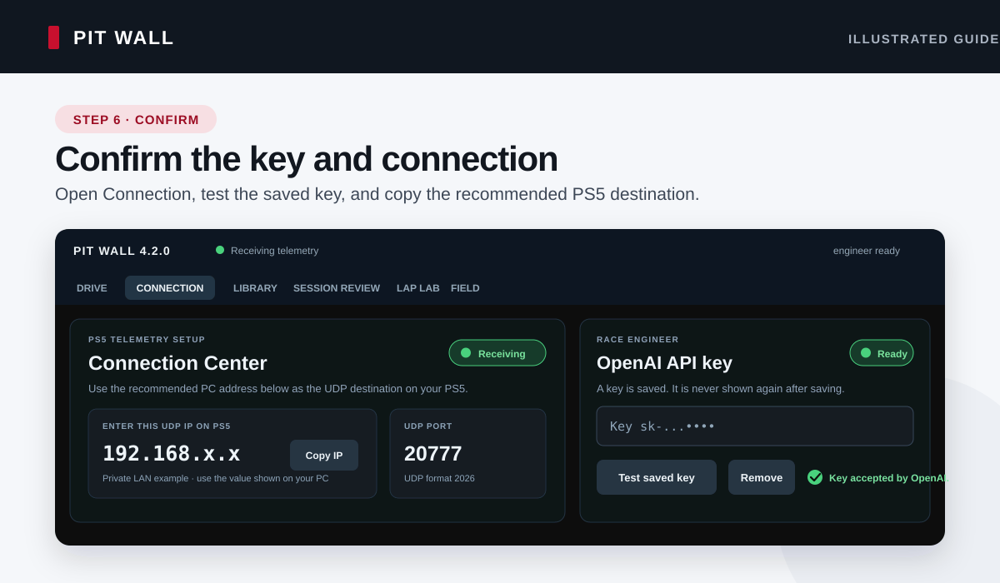
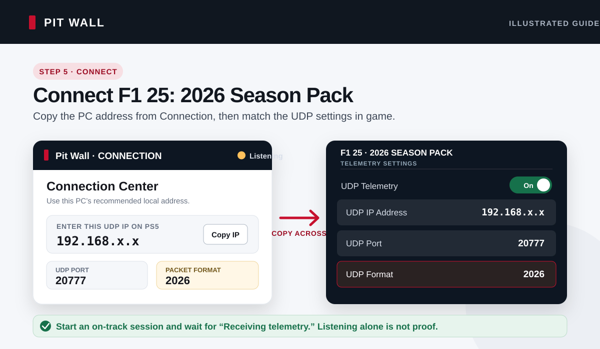
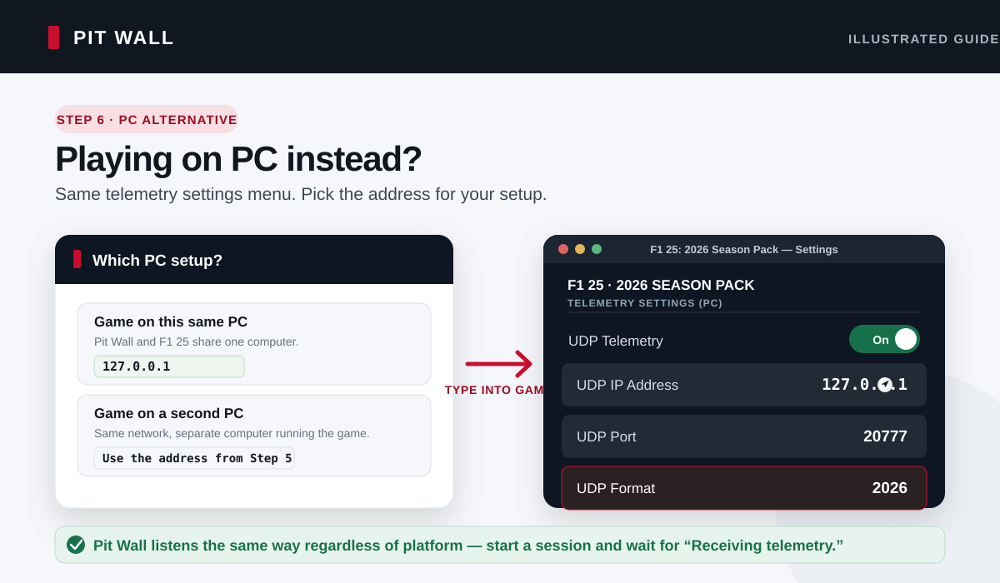

From activation code to your first radio check.
Follow these seven steps in order. You will download and activate Pit Wall, create your own OpenAI API key, connect the Windows companion to your PS5 / PC, and confirm that live telemetry and radio are ready.
Have these ready
Your activation code
From the Pit Wall purchase email.
An OpenAI Platform account
API billing is separate from a ChatGPT subscription.
A Windows 10 or 11 PC
On the same home network as a PS5 or second PC, or the one PC running the game.
F1 25: 2026 Season Pack on PS5 / PC
Updated and ready to start an on-track session.
Download the installer
- Open the Already have a code? section.
- Paste the full code from your purchase email. It has the form
PITW-XXXXX-XXXXX-XXXXX. - Select Download and save
PitWall-Setup.exe.

Turn on API billing
- Sign in at the OpenAI Platform. This may use the same login as ChatGPT, but it has separate billing.
- Open the API billing overview and add payment details or buy API credits.
- Review the auto-recharge setting before confirming. Leave it off unless you want automatic top-ups; if you turn it on, set a monthly recharge limit you are comfortable with.

Create and copy your API key
- Open the API keys page.
- Select Create new secret key, name it Pit Wall, choose All permissions for the simplest compatible setup, and create it.
- Copy the complete secret immediately and keep it private. OpenAI only shows the full value when it is created.

Install and activate Pit Wall
- Run
PitWall-Setup.exeand follow the installer. It installs for your Windows account, so it does not need an administrator password. - Leave Launch Pit Wall selected at the end. The Activate Pit Wall window opens.
- Paste your Pit Wall activation code and your OpenAI API key, then select Activate.

Confirm the key and copy the PC address
- Pit Wall starts its local server and opens the dashboard in your browser by itself. Give it 20–30 seconds — it loads the strategy engine, opens the telemetry socket and starts the audio device before the dashboard appears. Nothing is wrong during that wait. Then select the Connection tab.
- Under OpenAI API key, select Test saved key. A successful test confirms that the saved key can authenticate with OpenAI.
- Copy the large address under Enter this UDP IP on PS5 and note port
20777. The screen is labelled for PS5, but the same address also works for a second PC running the game.
192.168. or 10., when the game runs on a PS5 or a second PC. Never enter 127.0.0.1 or 0.0.0.0 there. The one exception: if F1 25 runs on this same PC as Pit Wall, use 127.0.0.1 in the game instead of the address shown here.
Send 2026 telemetry to Pit Wall
- In F1 25: 2026 Season Pack, open Settings → Telemetry Settings. The menu is the same on PS5 and PC.
- Set UDP Telemetry to On.
- Set the UDP IP Address: on a PS5 or a second PC, enter the address Pit Wall recommended in the previous step; if the game runs on this same PC as Pit Wall, enter
127.0.0.1instead. Set UDP Port to20777, and select UDP format 2026. - Start or join an on-track session. Return to Pit Wall and wait for the badge to say Receiving telemetry.


127.0.0.1 instead.Ask the engineer while you drive
- Open Drive in Pit Wall and select Test providers. Continue when it reports All configured providers ready; this live check uses a small amount of API credit.
- With the PC microphone and speakers ready, say “Mark, what is the gap ahead?” in one sentence. You can also say “Mark,” wait for the beep, and then ask.
- For push-to-talk on PS5, first map L3 to UDP Action 1 in the game's control settings, then use the L3 → UDP Action 1 radio card in Pit Wall and select Calibrate. On PC, bind the equivalent action in the game's own control-bindings screen, then calibrate that same input in Pit Wall.

If a check does not pass
The key test fails
Confirm that API billing is active, wait a few minutes after buying credits, and paste a newly created secret under Connection → OpenAI API key. Select Save key, then Test saved key. A ChatGPT subscription by itself is not API billing.
Pit Wall says Listening
Start an on-track session, recheck the address (the recommended PC address for a PS5 or second PC, or 127.0.0.1 for a same-PC setup), port 20777, and format 2026, then select Run diagnostics. For a second PC or a PS5, make sure it is on the same home network and that Windows Firewall allows Pit Wall on private networks.
The dashboard did not open
First, give it 20–30 seconds. Pit Wall opens the browser itself, but only once the strategy engine, telemetry socket and audio device are up, so a launch that looks like nothing is happening is usually just a launch still in progress.
If it has been longer than that, leave Pit Wall running and open http://127.0.0.1:8000 on that same PC. The address is local to the computer and is not a public website.
Closing the browser did not stop Pit Wall
That is deliberate. The dashboard is only a window onto Pit Wall; the app itself keeps running so it can carry on recording telemetry and answering on the radio while the browser is closed. There is no console window and no tray icon, so nothing visible tells you it is still there.
To stop it, open the dashboard and use Quit Pit Wall in the top-right corner. It finishes and saves any session being recorded first, then closes. Allow about 20 seconds for it to shut down fully before starting it again.
The activation code is rejected
Copy the full code from the purchase email and check for missing characters. A code activates one computer; if that computer was replaced or died, email vale.scott00@gmail.com for a replacement.
To narrow it down, run the activation diagnostics. It checks whether the server is reachable and whether your code is recognised, without using the code up.